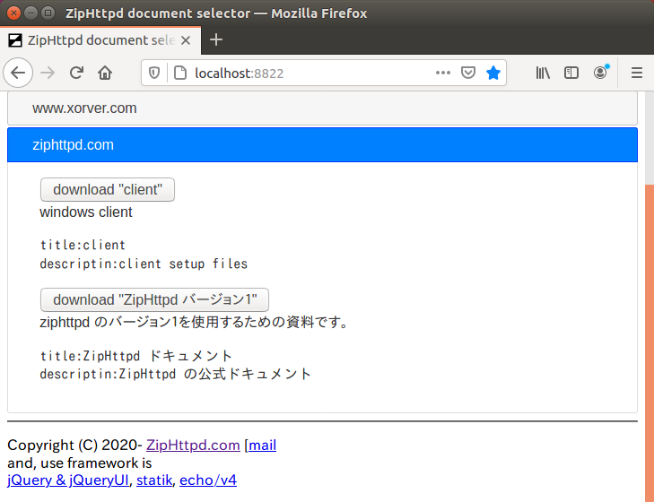

ZipHttpd
ZipHttpdドキュメント作成
ファイル制作
ドキュメントを制作する手順は以下の通りです。
１．ドキュメント開発環境を用意する
まずはドキュメントの名前を決めます。
prototype.zhd を docs/{{任意の名前}}.zhd として保存します。
このガイドでは docs/test.zhd として説明してあります。
２．ZipHttpd を再起動する
再起動すると static/localhost/prototype/{{任意の名前}} が作成されます。
static/ はドキュメントの内容を利用者側で差し替えるためのディレクトリです。
ここに置いたファイルはアクセス時に優先的に使用されます。
３．コンテンツを作成する
２．で作成されたディレクトリに html や画像などのコンテンツを作成します。
初期表示ページが設定されていませんので docs/{{任意の名前}}.json の docroot 項目で設定してください。
４．ブラウザで動作を確認する
コンテンツはブラウザで確認できます。
トップページの localhost - prototype - {{任意の名前}} です。

５．設定ファイルを作成する
マニフェストファイルを ziphttpd/config.json に作成してください。
配布されたドキュメントの各種設定を提供します。
６．ディレクトリ以下を zip 圧縮する
ディレクトリ以下を zip 圧縮すると、配布できるドキュメントが完成です。
ドキュメント署名
１．ドキュメントを署名する
作成したドキュメントは公開するために署名する必要があります。
そのためのツールが zhsign.exe です。
zhsign は秘密鍵・公開鍵・サイト表明・カタログの雛形を生成します。
秘密鍵は対象とするサイトのドキュメントを最初に署名しようとした時に作成されます。
D:\.ziphttpd>zhsign
-dir string
configuration directory
-file string
document file
-group string
document group name
-host string
hostname (ex. ziphttpd.com)
-name string
document name
D:\.ziphttpd>zhsign -host www.xorver.com -group xorver -name document -file D:\.ziphttpd\static\localhost\www.xorver.com\xorver\xorver.zhd
コマンドを実行すると、署名対象ファイルの署名ファイルが作成されます。
基本的に署名対象ファイルが（ホスト・グループ・ドキュメント名）に関連付けられます。
関連付けはカタログファイルに記録されます。
３つの名前はキーであり、更新時には署名対象ファイルが差し換わることになります。
| フラグ | デフォルト | 機能 | その他 |
|---|---|---|---|
| -dir | zhsign.exe の場所 | 基準ディレクトリ | 通常のセットアップでは指定する必要はありません。 |
| -file | なし | 署名対象ファイル | 署名したいファイルのパスです。 |
| -host | なし | ホスト名 | トップページに表示されます。 またURLパスの先頭に使用されます。 |
| -group | なし | ドキュメントグループ名 | |
| -name | なし | ドキュメント名 |
２．署名により作成されるファイル
署名により作成されたファイルは、ホストとして定義した https サーバで公開します。
公開するファイルは、署名格納ディレクトリのホスト別のディレクトリ以下に生成されます。
秘密鍵も作成されていますが、事故の防止もあり意識する必要が薄く、説明は割愛します。
これらのファイルをサーバ上の https://ホスト/sig/ 以下でダウンロードできるようにしてください。
公開鍵 (public.pem)
RSA-2048bit鍵です。
zhget は、公開鍵で検証してから store/ に保存します。
例) https://ziphttpd.com/sig/public.pem
-----BEGIN RSA PUBLIC KEY-----
MIIBCgKCAQEAyhUhG3HnHE25fVJvo7zAccKc2dR2qaFope1AWIfJisFxZ5Et9A55
foeDMVoRgCFc9ujrjlfCDXOp2xyVgNTeUPvJ/jpd/x5okL0p0QoOKOoDXvQ3/g15
cdw/2mcxg0UE0hsa9+1YZinwI9S5OD9RrXpkhK0Afbys9j4G4evp/JbHIM+uF7zp
WtVcdBD9fUb8+a0olt1KgC0FFjjZoZJFxcnUFwdtbRrJnU3+seCbzKlUNDtuf89o
Vcywml3t/o14Iy6jlLwYkIhOQdtZEOxJBailokeOLe56ltXCGnbTQTjgofieBJuM
+5WQ0Y6egnlX6j++NDtpNXfA7sbtq9Zg+wIDAQAB
-----END RSA PUBLIC KEY-----
公開鍵署名 (public.pem.zhsig)
公開鍵のいわゆる自己署名です。
これにより、公開鍵自身の正当性を証明しています。
例) https://ziphttpd.com/sig/public.pem.zhsig
{
"host": "ziphttpd.com",
"name": "public.pem",
"sig": "mSCHKV711axld/vxmh73qieAEgD2TAgc2l8vkhJlP68wa//yBphXOnM50pYep9Cjf9FOlTmZKT+SurKJiLkfUJbfBSCApQ7xp9Y+ZWeb4XTfpZucpRllKAlqxpaNO/dc3X70WQdNNdsKK5SxOzAp/i+Et2ekuXUZs4Oz4d+kcWS8CaXB8CC0KeVJ1BrY6CSddBlaK8NjYMvJfMUdWg9i/hm/9OUNG5FH6zRSwedl1LhygFzFNzInfcn645RoCSKAmaLpg3Jib9XOhrQFgRYqMD0HVpYpYI/NQ8MXJGwU8ZrdkIIiQdjYWn/vQylhfQs1WjGNaHck6T0F4Kn8SI8Q3Q==",
"url": "https://ziphttpd.com/sig/public.pem"
}
サイト表明 (site.json)
サイト名の署名が書かれています。
サイトが異なっていた場合には不正なサイトとして判断されます。
第三者が海賊版のサイトに公開鍵を複製して公開するのを防ぐためです。
zhget は、公開鍵で署名を検証して、正しければ公開鍵を store/ に保存する予定です。
例) https://ziphttpd.com/sig/site.json
現在はこの検証はまだ組み込んでいません。
ただ、海賊版が署名を付け直して再公開することは防げませんので効果は限定的です。
もっと良い方法があれば変更されます。
{"site":"yOLJbeNsAsAyaq8Q61owggeiVn1Fu4eRiQZfvY/Bxdea6N81m2Is5aNPw7H2ArOK26WzZyVqg7ovdgxPmzhZmgc7nYdOzKx0mBFlnGY/PivmvWrex5Or67BtqAlCXyPLXMPvCRy6ohGxN6amEX0KkCAMQ0nlhFWpo72SuLI6w3ZmhdgeY3mCLcGQUETohWvxs/EkN8/lJfPMj4/xED3rpoIfIyJ+ow6YlTjw+tBG/RqCVBxyoNJ20Js03y8p/IwZMm4oiCQTjSavLHYlrH8lNzWW6ZC5j2S/1ItC7QvNHo5hOjP3wZJ5+tKweo9DL7WkfLLBXdCbJVklL38F9bzyWg=="}
カタログファイル (catalog.json)
公開するドキュメントの構成が書かれています。
個々のドキュメントは署名を必要としますので、カタログには署名はありません。
zhsign では雛形しか作成されませんので、テキストエディタで必要に応じて書き換えてください。
例) https://ziphttpd.com/sig/catalog.json
{
"description": "",
"groups": {
"windows": {
"description": "windows client",
"docs": {
"client": {
"description": "client setup files",
"title": "client"
}
},
"title": "client"
},
"ziphttpd-V1": {
"description": "ziphttpd のバージョン１を使用するための資料です。",
"docs": {
"ziphttpd": {
"description": "ZipHttpd の公式ドキュメント",
"title": "ZipHttpd ドキュメント"
}
},
"title": "ZipHttpd バージョン１"
}
}
}
これを Selector で参照するとこうなります。

カタログファイルは、まだ暫定版です。
バナーファイルなどプレゼンテーションの項目を検討中です。
署名ファイル (ドキュメント名.zhsig)
-name で指定したドキュメント名に拡張子がついてファイル名となります。
例) https://ziphttpd.com/sig/ziphttpd.zhsig
{
"host": "ziphttpd.com",
"name": "ziphttpd",
"sig": "JzSbRkEHVNLb8qj66g91AOVF/rB/bRUCG3m/JWrvqhUO+IYsWxAzZA5FMUAMGIujCao8D0mQdWPbn8zeJHOJzBTc8bDhx4WswLTdDigZc4s3AVYfE2N5owmywPzbIZt20shVaHH8LczRA+gQtllG0y5VWUm6kp6Aa8SZ4Z6Q19py3tdbYjjPpYpO1jj0q0aqPpE0n3QmHx7uZAbp0HiLVTEL4uhNMt1cwRq3nkNACMOI9ALnqbUhvn707HjmkByHlwC4OFaUwXRaer2+4pa3FQnSqltBP9fBCY/LWiEJfM2Rkzk/wJYQqERlfHai5AyZ6KAWr0cu52NePjZzNXDz7g==",
"url": "https://ziphttpd.com/sig/manual.0.02.zhd"
}
ドキュメントの url は書き換えても問題ありません。
ZipHttpd では安価な Amazon S3 を使用しています。
{
"host": "ziphttpd.com",
"name": "ziphttpd",
"sig": "JzSbRkEHVNLb8qj66g91AOVF/rB/bRUCG3m/JWrvqhUO+IYsWxAzZA5FMUAMGIujCao8D0mQdWPbn8zeJHOJzBTc8bDhx4WswLTdDigZc4s3AVYfE2N5owmywPzbIZt20shVaHH8LczRA+gQtllG0y5VWUm6kp6Aa8SZ4Z6Q19py3tdbYjjPpYpO1jj0q0aqPpE0n3QmHx7uZAbp0HiLVTEL4uhNMt1cwRq3nkNACMOI9ALnqbUhvn707HjmkByHlwC4OFaUwXRaer2+4pa3FQnSqltBP9fBCY/LWiEJfM2Rkzk/wJYQqERlfHai5AyZ6KAWr0cu52NePjZzNXDz7g==",
"url": "https://xorver.s3-ap-northeast-1.amazonaws.com/ZipHttpd/document/manual.0.02.zhd"
}
リポジトリ
このサービスは二個の WebAPI で実現しています。
１．サイト一覧
https://ziphttpd.com/api/v1/list において提供される情報です。
{"hosts":["www.xorver.com","ziphttpd.com"]}
これは、ドキュメントを提供しているサイトの一覧を入手することを目的とする WebAPI です。
Selector はこの WebAPI にアクセスして稼働します。
２．サイト登録
サイト一覧で返されるサイトに新規参入者はどうやって登録すれば良いでしょうか？
その登録を司るのが、この WebAPI です。
まずはドキュメント署名で作成した署名などをサイトで公開しておきます。
その後に、https://ziphttpd.com/api/v1/regist/ の後ろにサイト名をつけてアクセスします。
それだけで、煩わしい課金やサインアップは不要で登録は完了します。
例) https://ziphttpd.com/api/v1/regist/www.xorver.com
この API にアクセスすると、ziphttpd.com はそのサイトの公開鍵と署名にアクセスして確認します。
確認ができた時、一覧にそのサイトは登録されます。
ドキュメント取得
この項では、どうやってドキュメントを取得するのかについて説明します。
この説明は、機構のセキュリティをレビューする方向けの情報です。
通常は気にする必要は特にありません。
サイト (ホスト)
普通にウェブページを公開しているサーバです。
利用者は、リポジトリで得たサイトとして参照します。
そのサイトからの通信は https により改ざんが防止されます。
まず、この機構(TSL)を基本インフラとして、公開鍵を配布します。
したがって、https ではないサイトでのドキュメントの公開はできません。
https ではないサイトは chrome などでは保護されていないページとして警告されます。
検索順位としても、大きく欠点として減点されています。
ですから、https は事実上の標準であり、旧来の http で提供されるページは問題外とします。
署名パス (https://xxxx.com/sig/)
サイトの /sig というパスですべてのファイルは公開します。
sig/ 以下にディレクトリは作りません。このパスで全ては完結します。
zhget は、この URL を参照します。
ファイルは、ダウンロードされると store/ホスト/ 以下のディレクトリに保存されます。
ただし、署名の一致しないファイルは保存されません。
カタログファイル
カタログファイルを読みだした利用者は、各ドキュメントのタイトルと説明でたどり着きます。